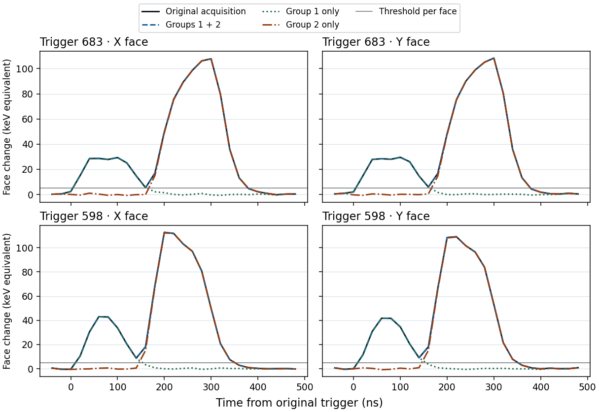

Historical GeGI study
GeGI shared clock and merged-trigger controls
Four independent 250 ms historical replay windows supply the 3,905-trigger census and 324 two-strip records. The recovered merged triggers and positive controls test what the shared electronics clock can distinguish.
Comparing close pulses on the shared clock
A separate recorded rise overlapped the saved preamplifier samples in 0/324 two-strip triggers. The simulation clock identified an additional group depositing energy in germanium within the same sampled span for 0/324 triggers.
The recorded check compares each sample span with separately registered rises in the acquisition. The reference check uses each distinct simulated deposit group's onset. A single onset without a unique assignment, or incomplete clock coverage without a confirmed extra onset, leaves the result unresolved. Close groups can produce one recorded rise.
| Exposure | Additional recorded rise · ADC | Additional recorded rise · fast | Additional recorded rise · slow | Extra group · ADC | Unresolved group · ADC | Another group within 6 µs |
|---|---|---|---|---|---|---|
| First half | 0/184 | 0/184 | 0/184 | 0/184 | 0/184 | 13/184 |
| Second half | 0/140 | 0/140 | 0/140 | 0/140 | 0/140 | 8/140 |
| Pooled | 0/324 | 0/324 | 0/324 | 0/324 | 0/324 | 21/324 |
The spans relative to the recorded trigger time are ADC -80 to +480 ns, fast -80 to +240 ns, slow -620 to +980 ns. Rechecking the saved ADC voltages found 0/324 windows with a second coincident rise after the trigger search had rearmed. Rearming requires 3 quiet samples. Coincidence requires both faces to reach a 5 keV-equivalent change per 20 ns sample.
In a broader simulation-clock check, 21/324 triggers with a unique group assignment and full clock coverage had another deposit interval within 6 µs of the assigned group's interval. The signed pulse-current reference found an additional current component on the ADC span for 0/324 triggers. Preamplifier tails can extend beyond the sample spans and active current intervals.
Counts by measured gamma line
| Measured line window | Additional recorded rise · ADC | Extra group · ADC | Unresolved group · ADC | Another group within 6 µs |
|---|---|---|---|---|
| 662 keV · First half | 0/37 | 0/37 | 0/37 | 4/37 |
| 662 keV · Second half | 0/30 | 0/30 | 0/30 | 0/30 |
| 662 keV · Pooled | 0/67 | 0/67 | 0/67 | 4/67 |
| 1,173 keV · First half | 0/19 | 0/19 | 0/19 | 1/19 |
| 1,173 keV · Second half | 0/15 | 0/15 | 0/15 | 0/15 |
| 1,173 keV · Pooled | 0/34 | 0/34 | 0/34 | 1/34 |
| 1,332 keV · First half | 0/19 | 0/19 | 0/19 | 4/19 |
| 1,332 keV · Second half | 0/5 | 0/5 | 0/5 | 0/5 |
| 1,332 keV · Pooled | 0/24 | 0/24 | 0/24 | 4/24 |
Across all 3,905 qualified triggers, simulation timing associated 3,899 with one deposit group, left 4 ambiguous and linked 2 to two depositing groups each. Both triggers with two groups fell outside the two-strip selection. For each example, the recovered ADC stream's checksum matched the original acquisition and the local filtered samples reproduced the recorded rise.
Reading the two deposit groups separately
For each original merged trigger, the controls replay the same two archived current signals together and one at a time, at their original arrival times and ADC sampling phase. Both paired controls reproduce every original ADC code in the saved window. To see the original slow energies and flags in Control, open the matching acquisition and expand Inspect any recorded trigger.

The slow-energy table uses the +880 to +980 ns flat-top gate after each accepted trigger. The fast-signal table uses the same +0 to +240 ns gate after the original trigger for all four inputs, so a change in the automatic trigger time cannot move that comparison gate. The signed area is calibrated to an equivalent energy from a nominal pulser. The table includes strips adjacent to any listed collecting strip.
Trigger 683
The Ge groups started at -10.18 and +161.25 ns relative to the original trigger at 169,155,120 ns on the clock of independent-b000001-250ms.
| Readout | Rise on original clock | X strips | Y strips | Guard collection | X sum (keV) | Y sum (keV) | Slow energy (keV) |
|---|---|---|---|---|---|---|---|
| Original acquisition | +0 to +380 ns | X06 | Y07, Y14 | None | 858.227 | 858.212 | 858.219 multiple collecting strips |
| Groups 1 + 2 | +0 to +380 ns | X06 | Y07, Y14 | None | 858.227 | 858.212 | 858.219 multiple collecting strips |
| Group 1 only | +0 to +160 ns | X06 | Y14 | None | 180.981 | 180.951 | 180.966 |
| Group 2 only | +160 to +380 ns | X06 | Y07 | None | 677.222 | 677.219 | 677.220 |
In the native drift, both charge groups ended on X06. Group 1 ended on Y14 and group 2 on Y07 on the opposite face. Neither group ended on a guard.
Signed fast signals on neighboring strips
Adding group 2 changed X07 from -6.352 to -30.519 keV equivalent, the largest change among the listed neighbors.
| Neighbor | Original | Groups 1 + 2 | Group 1 only | Group 2 only | Pair − group 1 | Pair − group 2 |
|---|---|---|---|---|---|---|
| X05 | -17.766 | -17.766 | -7.340 | -10.425 | -10.426 | -7.341 |
| X07 | -30.519 | -30.519 | -6.352 | -24.181 | -24.167 | -6.338 |
| Y06 | +7.966 | +7.966 | -0.247 | +7.966 | +8.213 | +0.000 |
| Y08 | +5.743 | +5.743 | -0.150 | +5.718 | +5.892 | +0.024 |
| Y13 | +13.163 | +13.163 | +13.157 | +0.051 | +0.006 | +13.112 |
| Y15 | +5.225 | +5.225 | +5.225 | +0.016 | +0.000 | +5.209 |
Trigger 598
The Ge groups started at -2.32 and +145.15 ns relative to the original trigger at 161,514,880 ns on the clock of independent-b000004-250ms.
| Readout | Rise on original clock | X strips | Y strips | Guard collection | X sum (keV) | Y sum (keV) | Slow energy (keV) |
|---|---|---|---|---|---|---|---|
| Original acquisition | +0 to +340 ns | X03, X07 | Y05, Y06, Y13, Y14 | X guard, Y guard | 193.661 | 218.184 | Unavailable guard collection, X and Y energy sums disagree |
| Groups 1 + 2 | +0 to +340 ns | X03, X07 | Y05, Y06, Y13, Y14 | X guard, Y guard | 193.661 | 218.184 | Unavailable guard collection, X and Y energy sums disagree |
| Group 1 only | +0 to +160 ns | X03, X07 | Y05, Y06 | None | 193.657 | 193.510 | 193.583 multiple collecting strips |
| Group 2 only | +140 to +340 ns | None | Y13, Y14 | X guard, Y guard | Unavailable | 24.684 | Unavailable guard collection, no collecting strip on one face |
Group 2 sent carriers from 30/30 deposit rows to both guards. Y13 (8.70) and Y14 (15.97) retained induced signals in keV equivalent at the end of the drift, with zero endpoint deposits. Including strips at or above 5 keV equivalent, the combined native sums were 193.56 on X and 218.25 on Y. The slow-electronics sums from the original acquisition appear in the table. In the paired readout, the difference X minus Y was -24.52 keV, exceeding a 4.36 keV tolerance in magnitude. Group 1 alone passed two-strip capture with 1 energy-compatible X/Y pairing.
Signed fast signals on neighboring strips
Adding group 2 changed Y14 from +0.121 to +13.294 keV equivalent, the largest change among the listed neighbors.
| Neighbor | Original | Groups 1 + 2 | Group 1 only | Group 2 only | Pair − group 1 | Pair − group 2 |
|---|---|---|---|---|---|---|
| X02 | +0.140 | +0.140 | +0.140 | -0.039 | +0.000 | +0.179 |
| X04 | +0.238 | +0.238 | +0.238 | -0.168 | +0.000 | +0.406 |
| X06 | -1.111 | -1.111 | -1.105 | -0.180 | -0.006 | -0.931 |
| X08 | -1.473 | -1.473 | -1.467 | -0.045 | -0.006 | -1.428 |
| Y04 | +12.461 | +12.461 | +12.461 | +0.008 | +0.000 | +12.453 |
| Y05 | +133.027 | +133.027 | +133.027 | +0.057 | +0.000 | +132.970 |
| Y06 | +10.197 | +10.197 | +10.187 | -0.063 | +0.010 | +10.259 |
| Y07 | +0.524 | +0.524 | +0.516 | -0.206 | +0.008 | +0.731 |
| Y12 | +3.851 | +3.851 | +0.152 | +3.851 | +3.700 | +0.000 |
| Y13 | +10.914 | +10.914 | -0.087 | +10.914 | +11.001 | +0.000 |
| Y14 | +13.294 | +13.294 | +0.121 | +13.294 | +13.173 | +0.000 |
| Y15 | +3.793 | +3.793 | +0.105 | +3.793 | +3.687 | +0.000 |
Matched noise and amplifier history
The original continuous ADC includes the full exposure's amplifier history. All three replay controls use the same original noise draws, ADC preamble baseline and known history within 40 feedback time constants of the focused slice. The diagnostics below remove one of these contributions from the paired replay.
| Trigger | Matched pair | Pair without history | Pair without noise |
|---|---|---|---|
| 683 | 0/986 | 4/986 | 790/986 |
| 598 | 0/986 | 24/986 | 792/986 |
Open the component identities, ADC samples, all readout outcomes and source hashes (JSON).
Checking the window method with known inputs
Each test combines two 250 keV pulses. The six tests at each delay cover same, adjacent and far strip pairs at two sampling phases. Each saved window is centered on the first accepted trigger, including cases with one collecting strip per face. The ordinary two-strip selection would save 3/24 first-trigger windows. Of those, 3/3 showed one coincident rise.
At 600 ns the full clock recorded both triggers in all six cases and the second input arrived after the saved ADC window.
| Input delay | Second input inside ADC window | Second rearmed rise in window | Two accepted triggers on full clock |
|---|---|---|---|
| 0 ns | 6/6 | 0/6 | 0/6 |
| 200 ns | 6/6 | 1/6 | 1/6 |
| 300 ns | 6/6 | 6/6 | 6/6 |
| 600 ns | 0/6 | 0/6 | 6/6 |
Open the timing counts, definitions and source hashes (JSON).
All research25 × 250 ms shared-readout studyFour independent acquisitions